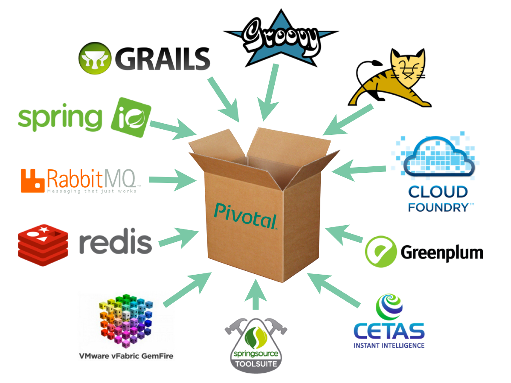

<!DOCTYPE html>
<html>
<head>
	<meta charset="utf-8">
	<meta http-equiv="X-UA-Compatible" content="IE=edge,chrome=1">
	<meta name="viewport" content="width=1024, user-scalable=no">

	<title>10 years of Groovy!</title>
	
	<!-- Required stylesheet -->
	<link rel="stylesheet" href="core/deck.core.css">
	
	<!-- Extension CSS files go here. Remove or add as needed. -->
	<link rel="stylesheet" href="extensions/goto/deck.goto.css">
	<link rel="stylesheet" href="extensions/menu/deck.menu.css">
	<link rel="stylesheet" href="extensions/navigation/deck.navigation.css">
	<link rel="stylesheet" href="extensions/status/deck.status.css">
	<link rel="stylesheet" href="extensions/hash/deck.hash.css">
	<link rel="stylesheet" href="extensions/scale/deck.scale.css">

	<!-- Style theme. More available in /themes/style/ or create your own. -->
	<link rel="stylesheet" href="css/extra.css">
	<link rel="stylesheet" href="css/springone13.css">

	<!-- Transition theme. More available in /themes/transition/ or create your own. -->
	<link rel="stylesheet" href="themes/transition/horizontal-slide.css">

    <!-- CodeMirror stylesheet -->
    <link rel="stylesheet" href="extensions/codemirror/deck.codemirror.css">

    <link rel="stylesheet" href="extensions/codemirror/themes/neat.css">

	<!-- Required Modernizr file -->
	<script src="modernizr.custom.js"></script>

	<!-- TimelineJS -->
	<script src="jquery-1.7.2.min.js"></script>
	<script src="js/storyjs-embed.js"></script>
        <script>$(document).ready(function() {
     createStoryJS({
         width: $( window ).width()*90/100,
         height: '400',
         source: 'timeline.jsonp',
        embed_id: 'groovy-timeline'
    });
});
	</script>
</head>
<body class="deck-container">

<!-- Begin slides. Just make elements with a class of slide. -->

<section class="slide">
        <div class="vcenter">
        <p></p>
        <h2>10 years of Groovy!</h2>
        <h3>Cédric Champeau, SpringSource</h3>
        </div>
</section>

<section class="slide">
	<h2>About me</h2>
    <h3>Past : Groovy contributor</h3>
                <ul>
                    <li>Bugfixes
                    <li>Modules: @Bytecode AST xform, GFreeMarker</li>
                    <li>Core: compilation customizers, @xInterrupt, ...</li>
                    <li>Used Groovy as a DSL for natural language processing</li>
                </ul>
    <h3>Present: Core Groovy committer</h3>
            <ul>
                <li>Compilation configuration</li>
                <li>Static type checking & Static compilation</li>
		        <li>Bugfixing...</li>
                <li>Groovy in Action 2 co-author</li>
            </ul>
    <h3>Follow me</h3>
        <ul>
            <li>Twitter: <a href="http://twitter.com/CedricChampeau" target="_blank">@CedricChampeau</a></li>
            <li>Google+: <a href="http://gplus.to/cchampeau" target="_blank">http://gplus.to/cchampeau</a></li>
            <li>Blog: <a href="http://jroller.com/melix" target="_blank">http://jroller.com/melix</a></li>
        </ul>
</section>

<section class="slide">
    <h2>Pivotal</h2>
    
</section>


<section class="slide">
    <h1>Demo</h1>
</section>

<section class="slide">
    <h2>Groovy is Open Source Software</h2>
    <div class="left">
    <a href="https://github.com/groovy/groovy-core"></a>
    <ul>
        <li>Licensed under APL2</li>
        <li>101 contributors</li>
        <li>10000+ commits</li>
        <li>1.7+ million downloads in 2013</li>
        <li>On GitHub since summer 2011</li>
        <li>Dependency of <a href="http://jpm4j.org/#!/p/org.codehaus.groovy/groovy-all?tab=inbound" target="_blank">25000+ OSS projects</a></li>
    </ul>
    <p><iframe src="http://ghbtns.com/github-btn.html?user=groovy&repo=groovy-core&type=fork&count=true&size=large" height="30" width="170" frameborder="0" scrolling="0" style="width:170px; height: 30px;" allowTransparency="true"></iframe></p>
    </div>
    <div class="right">
        
    </div>
</section>

<section class="slide">
    <h2>Social</h2>
    <div class="left">
        <p>#groovy</p>
        <blockquote class="twitter-tweet" lang="fr"><p>Happy Birthday to the LAVA LAMP! <a href="https://twitter.com/search?q=%23Groovy&amp;src=hash">#Groovy</a> | <a href="http://t.co/aIg322pHif">http://t.co/aIg322pHif</a></p>&mdash; CLEAR 4G (@CLEAR) <a href="https://twitter.com/CLEAR/statuses/375018634269437954">3 Septembre 2013</a></blockquote>
    </div>
    <div class="right">
        <p>#groovylang</p>
        
        <blockquote class="twitter-tweet" lang="fr"><p>Groovy 2,2 on the front page of Hacker News. Give it some love Groovsters! <a href="https://t.co/qZPIdnmnFT">https://t.co/qZPIdnmnFT</a> <a href="https://twitter.com/search?q=%23groovylang&amp;src=hash">#groovylang</a></p>&mdash; Sean Gilligan (@msgilligan) <a href="https://twitter.com/msgilligan/statuses/402544909019643904">18 Novembre 2013</a></blockquote>
    </div>
</section>


<section class="slide">
   <h2>Happy birthday Groovy!</h2>
   <section id="groovy-timeline"></section>
</section>

<section class="slide">
    <h2>A brief history...</h2>
    <h3>What is Groovy?</h3>
    <div class="left">
        <ul>
            <li>A language for the JVM (compiles to bytecode)</li>
            <li>The ideal Java companion</li>
            <li>Closures</li>
            <li>Scripting</li>
            <li>Builders</li>
        </ul>
    </div>
    <div class="right">

    </div>
</section>

<section class="slide">
    <h2>Groovy is...</h2>
    <ul>
        <li>Dynamic</li>
        <li>Optionally (statically) typed</li>
        <li>Imperative</li>
        <li>Functional</li>
        <li>Metaprogramming</li>
    </ul>
</section>

<section class="slide">
    <h2>A brief history...</h2>
    <h3>Some principles of the language</h3>
    <ul>
        <li>should be easy to learn (especially coming from Java)</li>
        <li>should not get in the way (think checked exceptions, equals, switch, ...)</li>
        <li>remove boilerplate code</li>
        <li>DSLs FTW!</li>
        <li>Choice, choice, choice</li>
    </ul>
</section>

<section class="slide">
    <h2>Grooviness in action (1/10)</h2>
    <h3>Spock specification</h3>
    <textarea id="spock" name="spock" class="code" style="display:none" mode="groovy">
class HelloSpock extends spock.lang.Specification {
    def "length of Spock's and his friends' names"() {
        expect:
        name.size() == length

        where:
        name     | length
        "Spock"  | 5
        "Kirk"   | 4
        "Scotty" | 6
    }
}</textarea>
</section>

<section class="slide">
    <h2>Grooviness in action (2/10)</h2>
    <h3>DSLs</h3>
    <textarea id="dsl" name="dsl" class="code" style="display:none" mode="groovy">
buy 1000.actions at 3.euro
</textarea>
</section>

<section class="slide">
    <h2>Grooviness in action (3/10)</h2>
    <h3>String interpolation</h3>
    <textarea id="gstring" name="gstring" class="code" style="display:none" mode="groovy">
println "Hello, my name is $name and I'm ${computeAge()} years old"
</textarea>
</section>

<section class="slide">
    <h2>Grooviness in action (4/10)</h2>
    <h3>Grails where queries</h3>
    <textarea id="grails_query" name="grails_query" class="code" style="display:none" mode="groovy">
Person.where {
    (lastName != "Simpson" && firstName != "Fred")
        || (firstName == "Bart" && age > 9)
}
</textarea>
</section>

<section class="slide">
    <h2>Grooviness in action (5/10)</h2>
    <h3>Geb browser automation</h3>
    <textarea id="geb" name="geb" class="code" style="display:none" mode="groovy">
class WebSpecification  extends GebSpec {
    def "Check the Groovy website"() {
        when: "we open the root page"
            go '/'
        then: "the title contains Groovy"
            title =~ 'Groovy'

        when: "we click the download link"
            $('a', href: contains('Download')).click()

        then: "the title of the page contains Download"
            title =~ "Download"
        and: "a link to Groovy 2.1.2 is found"
            $('h3', id: 'Download-Groovy212').text() == 'Groovy 2.1.2'
    }
}</textarea>
</section>

<section class="slide">
    <h2>Grooviness in action (6/10)</h2>
    <h3>Static compilation on demand</h3>
    <textarea id="compilestatic" name="compilestatic" class="code" style="display:none" mode="groovy">
@CompileStatic
int fib(int n) { n<1?n:fib(n-1)+fib(n-2) }</textarea>
</section>

<section class="slide">
    <h2>Grooviness in action (7/10)</h2>
    <h3>Grape</h3>
    <textarea id="grab" name="grab" class="code" style="display:none" mode="groovy">
@GrabResolver("https://oss.jfrog.org/artifactory/repo")
@Grab("org.ratpack-framework:ratpack-groovy:0.9.0-SNAPSHOT")
import static org.ratpackframework.groovy.RatpackScript.ratpack
import static org.ratpackframework.groovy.Template.groovyTemplate

ratpack {
    handlers {
        get {
            response.send "Hey, Groovy!"
        }
    }
}</textarea></section>

<section class="slide">
    <h2>Grooviness in action (8/10)</h2>
    <h3>Duck typing</h3>
    <textarea id="duck" name="duck" class="code" style="display:none" mode="groovy">
class Duck {
   void quack() { println 'Quack!' }
}
class BirdThatLikesToQuack() {
   void quack() { println 'Quack!' }
}
[new Duck(), new BirdThatLikesToQuack()]*.quack()
    </textarea>
</section>

<section class="slide">
    <h2>Grooviness in action (9/10)</h2>
    <h3>AST transformations</h3>
    <textarea id="inherit" name="inherit" class="code" style="display:none" mode="groovy">
@InheritConstructors
class NoPainNoGainException extends RuntimeException { }
</textarea>
</section>

<section class="slide">
    <h2>Grooviness in action (10/10)</h2>
    <h3>Gradle</h3>
    <textarea id="android" name="android" class="code" style="display:none" mode="groovy">
apply plugin: 'android'
...
android {
    ...

    flavorGroups "abi", "version"

    productFlavors {
        freeapp {
            flavorGroup "version"
            ...
        }

        x86 {
            flavorGroup "abi"
            ...
        }
    }
}
</textarea>
</section>


<section class="slide">
    <h2>A brief history...</h2>
    <h3>Groovy 1.0</h3>
    <div class="left">
        <p>Java</p>
        <textarea id="groovy10_1_java" name="groovy10_1_java" class="code" style="display:none" mode="clike">
public class Person {
    private String firstName;
    private String lastName;
    public Person(String firstName, String lastName) {
        this.firstName = firstName;
        this.lastName = lastName;
    }
    public String getFirstName() {
        return firstName;
    }
    public void setFirstName(String firstName) {
        this.firstName = firstName;
    }
    public String getLastName() {
        return lastName;
    }
    public void setLastName(String lastName) {
        this.lastName = lastName;
    }
}
        </textarea>
    </div>
    <div class="right">
        <p>Groovy</p>
        <textarea id="groovy10_1" name="groovy10_1" class="code" style="display:none" mode="groovy">
class Person {
    String firstName
    String lastName
}
def p = new Person(
            firstName: 'Austin',
            lastName: 'Powers')
        </textarea>
    </div>
</section>

<section class="slide">
    <h2>A brief history...</h2>
    <h3>Groovy 1.0</h3>
    <div class="left">
        <p>Java</p>
        <textarea id="groovy10_2_java" name="groovy10_2_java" class="code" style="display:none" mode="clike">
List&lt;Integer&gt; list = Arrays.asList(4,2,1,3);
Collections.sort(list, new Comparator&lt;Integer&gt;() {
    public int compare(final Integer o1, final Integer o2) {
        if (o1&lt;o2) return -1;
        if (o1&gt;o2) return 1;
        return 0;
    }
});
        </textarea>
    </div>
    <div class="right">
        <p>Groovy</p>
        <textarea id="groovy10_2" name="groovy10_2" class="code" style="display:none" mode="groovy">
[4,2,1,3].sort {
    a,b -> a <=> b
}
// or
Collections.sort([4,2,1,3],{a,b -> a <=> b} as Comparator)
        </textarea>
    </div>
</section>

<section class="slide">
    <h2>A brief history...</h2>
    <h3>Groovy 1.0</h3>
        <h4>Java</h4>
        <p>Too long to fit in a slide...</p>
        <h4>Groovy</h4>
        <textarea id="groovy10_3" name="groovy10_3" class="code" style="display:none" mode="groovy">
import groovy.xml.MarkupBuilder
def writer = new StringWriter()
def builder = new MarkupBuilder(writer)
def metas = [
   [name: 'description', content: 'My page'],
   ['http-equiv':"Content-Type", content:"text/html; charset=ISO-8859-1"]
]
builder.html {
    head {
        title 'A Groovy builder'
        metas.each {
            meta(it)
        }
    }
}
writer.toString()
// Result: '<html>\n  <head>\n    <title>A Groovy builder</title>\n    <meta name=\'description\' content=\'My page\' />\n    <meta http-equiv=\'Content-Type\' content=\'text/html; charset=ISO-8859-1\' />\n  </head>\n</html>'
        </textarea>
</section>

<section class="slide">
    <h2>A brief history...</h2>
    <h3>Groovy 1.5</h3>
    <ul>
        <li>Alignment with Java 5 (annotations,...)</li>
        <li>Joint compilation</li>
        <li>Improved metaclasses (Expando metaclass)</li>
        <li>Performance improvements</li>
    </ul>
</section>

<section class="slide">
    <h2>A brief history...</h2>
    <h3>Groovy 1.6</h3>
    <ul>
        <li>AST transformations (@ToString, @EqualsAndHashCode, ...)</li>
        <li>Call site caching</li>
        <li>Grape module and dependency system</li>
        <li>JSR-223 scripting engine built-in</li>
        <li>metaprogramming improvements, like the EMC DSL, per-instance metaclasses, runtime mixins</li>
    </ul>
</section>

<section class="slide">
    <h2>A brief history...</h2>
    <h3>Groovy 1.7</h3>
    <ul>
        <li>Power asserts</li>
        <li>new GroovyScriptEngine</li>
        <li>SQL enhancements</li>
    </ul>
</section>

<section class="slide">
    <h2>A brief history...</h2>
    <h3>Groovy 1.8</h3>
    <ul>
        <li>Primitive optimizations</li>
        <li>Enhanced DSLs (command chains)</li>
        <li>First class JSON support</li>
        <li>Improved functional programming</li>
        <li>new GroovyScriptEngine</li>
        <li>SQL enhancements</li>
    </ul>
</section>

<section class="slide">
    <h2>A brief history...</h2>
    <h3>Groovy 2.0</h3>
    <ul>
        <li>Modularisation</li>
        <li>Static type checking/compilation</li>
        <li>Java 7 alignments</li>
        <li>Invokedynamic support</li>
        <li>Semantic versioning</li>
    </ul>
</section>

<section class="slide">
    <h2>A brief history...</h2>
    <h3>Groovy 2.1</h3>
    <ul>
        <li>Full invokedynamic support</li>
        <li>Type checking extensions</li>
        <li>Meta annotations</li>
    </ul>
</section>

<section class="slide">
    <h2>A brief history</h2>
    <h3>Groovy 2.2</h3>
    <ul>
        <li>Implicit closure coercion</li>
        <li>Improved Groovy shell (CLI)</li>
        <li>Static compilation extensions</li>
        <li>@Memoized</li>
        <li>Get it while it's hot!</li>
    </ul>
</section>

<section class="slide">
    <h2>And the future?</h2>
    <h3>Groovy 2.3...</h3>
    <ul>
        <li>Traits?</li>
        <li>Tail call optimization?</li>
        <li>Your favorite feature here...</li>
    </ul>
</section>

<section class="slide">
    <h2>And the future?</h2>
    <h3>Groovy 3...</h3>
    <ul>
        <li>New meta-object protocol</li>
        <li>Grammar rewrite</li>
    </ul>
</section>

<section class="slide">
    <h2>Is Groovy good for production?</h2>
    
</section>

<section class="slide">
    <h2>Groovy Ecosystem</h2>
    <div class="left">
        
        
        
        
        
    </div>
    <div class="right">
        
        
        
        
        
    </div>
</section>

<section class="slide">
    <h2>It's not all about code</h2>
    <h3>We need your help</h3>
    <ul>
        <li>Revamped website</li>
        <li>Brand new documentation</li>
        <li>You can join us!</li>
    </ul>
</section>

<section class="slide">
    <h2>Questions?</h2>
    
</section>

<section class="slide">
    <h2>Thanks!</h2>
    <p>Slides are uploaded to my <a href="https://github.com/melix" target="_blank">GitHub repository</a>.</p>
    <p>Follow me on <a href="http://twitter.com/CedricChampeau">Twitter</a> for links.</p>
</section>

<!-- End slides. -->


<!-- Begin extension snippets. Add or remove as needed. -->

<!-- deck.navigation snippet -->
<a href="#" class="deck-prev-link" title="Previous">&#8592;</a>
<a href="#" class="deck-next-link" title="Next">&#8594;</a>

<!-- deck.status snippet -->
<p class="deck-status">
	<span class="deck-status-current"></span>
	/
	<span class="deck-status-total"></span>
</p>

<!-- deck.goto snippet -->
<form action="." method="get" class="goto-form">
	<label for="goto-slide">Go to slide:</label>
	<input type="text" name="slidenum" id="goto-slide" list="goto-datalist">
	<datalist id="goto-datalist"></datalist>
	<input type="submit" value="Go">
</form>

<!-- deck.hash snippet -->
<a href="." title="Permalink to this slide" class="deck-permalink">#</a>

<!-- End extension snippets. -->


<!-- Required JS files. -->
<script src="jquery-1.7.2.min.js"></script>
<script src="core/deck.core.js"></script>
<script src="extensions/codemirror/codemirror.js"></script>

<!-- Extension JS files. Add or remove as needed. -->
<script src="core/deck.core.js"></script>
<script src="extensions/goto/deck.goto.js"></script>
<script src="extensions/hash/deck.hash.js"></script>
<script src="extensions/status/deck.status.js"></script>
<script src="extensions/navigation/deck.navigation.js"></script>
<script src="extensions/scale/deck.scale.js"></script>
<script src="extensions/codemirror/deck.codemirror.js"></script>
<script src="extensions/codemirror/mode/groovy/groovy.js"></script>
<script src="extensions/codemirror/mode/clike/clike.js"></script>
<script src="extensions/codemirror/mode/xml/xml.js"></script>

<!-- Initialize the deck. You can put this in an external file if desired. -->
<script>
	$(function() {
        $.deck('.slide');
        var opts = $.deck('getOptions');
        opts.codemirror.theme = 'neat';
	});
</script>
<script>!function(d,s,id){var js,fjs=d.getElementsByTagName(s)[0],p=/^http:/.test(d.location)?'http':'https';if(!d.getElementById(id)){js=d.createElement(s);js.id=id;js.src=p+"://platform.twitter.com/widgets.js";fjs.parentNode.insertBefore(js,fjs);}}(document,"script","twitter-wjs");</script>
</body>
</html>
